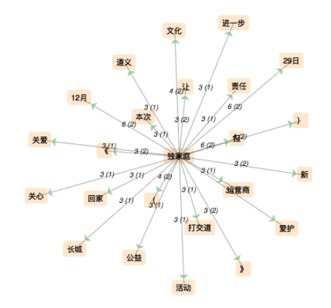

✽ ✽ ✽
Considérée depuis longtemps comme pierre de soubassement de la société, la famille est pour les chinois le vrai cœur de la vie quotidienne, de la société, voire de la nation, la « famille (家庭) » est redevenue un sujet populaire ces dernières années en raison d’une succession de politiques et de lois concernant le mariage et les enfants.
Surtout après avoir constaté les effets de la politique de l’enfant unique sur le taux de fécondité, il était temps pour les Chinois de faire face sérieusement au décalage entre les vieux concepts de la famille et les vraies demandes dans la nouvelle époque.
✽ ✽ ✽
.png)
I. Script
>>> Veuillez cliquer pour télécharger le script.
Afin d’analyser cette notion de famille en chinois, on collecte comme source une cinquantaine de textes sur Internet dont la plupart viennent des grands sites d'actualité en chinois (sina.com, qq.com, sohu.com, people.com, ifeng.com, etc.).
II. Tableau final
III. Segmentation
Une fois que le corpus est bien collecté, on passe à l’étape suivante: le traitement de corpus.
Ressemblant à d’autres langues de l’extrême-orient, il n'y a pas de délimiteur naturel de mots dans la langue chinoise. Le traitement automatique des textes demande au préalable un traitement par des logiciels de segmentation avant de passer à une analyse.
Dans ce projet, on emploie le « Chinese Segmenter » proposé par l’université de Stanford (source ouverte sur le site http://nlp.stanford.edu/software/segmenter.shtml). Par rapport au « Stanford Tokenizer » applicable pour l’anglais, le français et l’espagnol, cet outil possède une compétence dans le pré-process du traitement des textes brutes.
Puis, il faut nettoyer le corpus.
Dans les textes communs, les ponctuations possèdent une haute fréquence. Afin d’éliminer son influence sur le traitement automatique du corpus, on emploie la commande sed pour les enlever.
Les ponctuations chinoises sont différentes de celles des langues occidentales : d’un côté, il existe des ponctuations particulières ( «。», «《》», «、», etc.); de l’autre côté, même les ponctuations en commun avec l’anglais et le français peuvent être présentées sous une forme spéciale dite « pleine chasse », constaté aussi dans d’autres langues occidentales comme le japonais ou le coréen, et elles sont à distinguer des « ponctuations à demi chasse («?» en français et «？» en chinois). A l’aide de l’expression régulière « [:punct:] », il est possible de tout enlever.
De la même manière, on peut enlever également quelques mots communs (les pronoms personnels et interrogatifs ; la copule « 是 (être) » ; les prépositions et conjonctions fréquentes ).
Ainsi, on obtient le corpus final à analyser.
Corpus concaténé et segmenté :
| DUMP | CONTEXT |
| Télécharger | Télécharger |
IV. Analyse
L’outil d’analyse principal utilisé ici est leTrameur. A l’aide duquel on s’intéresse à la cooccurrence des expressions avec le pôle « 家庭 (famille) ».
Et voici les nuages de mots :
On remarque tout d’abord une forte influence de la « politique de l’enfant unique ( 独生子女政策 ) » sur la notion de famille en Chine, en listant les mots qui y sont liés fortement : « 政策(politique) », « 空巢家庭 (Famille de nid vide) », « 失独家庭 (Famille perdant l’enfant unique) » et « 421 (4 grands-parents + 2 parents + 1 enfant) » qui définit un nouveau modèle de famille de nos jours. De plus, l’influence très rapide de la politique de deux enfants : « 一 (un (enfant)) », « 二／两 (deux (enfants)) », « 第二 (deuxième) »…
Dans ce résultats, une certaine évolution, de la famille élargie traditionnelle à la famille nucléaire moderne, est évidemment visible. La structure de la famille se simplifie, le rôle du mariage s’affaiblit au fils du temps.
En outre, les termes « 重组家庭 (famille recomposée) », « 单亲家庭 (famille monoparentale) », existe aussi, mais d’une manière moins fréquente. « 同性恋婚姻 (Mariage homosexuelle) » encore moins…
Les autres termes qui apparaissent aux premiers rangs sont « 幸福(bonheur) », « 丁克 (Dinks) », « 压力(pression) », « 女 (femme) », « 教育 (éducation) », « 住房 (logement) », « 收入 (revenus) »… Leur présence montre un changement des mentalités et la mise en question de la restriction forcée de la maternité qui est accompagnée de problèmes sociaux : « 养老 (bénéficier de soins des enfants) », « 生育率 (taux de fécondité) »…
Pour le résultat final, veuillez consulter la rubrique "Résultats".
V. Difficultés rencontrées
- Encodage "GBK"
- Segmentation incorrete
- Nettoyage de corpus
Une grande difficulté ici concerne l’encodage grandement employé par des sites en chinois, celui de « GKB », qui reste méconnaissable par lynx, et ainsi impossible à traiter avec le script proposé.
Ce « GBK» n’est point marginal. Les grands sites regroupant une énorme qualité de webpages, tels que www.163.com, utilisent principalement cet encodage.
Cela cause ainsi un grand problème : une grande partie de corpus sur le web chinois ne peut pas être traitée par cette méthode.
|

|
Malgré l’avancement remarquable des outils, l’exactitude de la segmentation reste insuffisante. On constate dans les résultats de iTrameur certaines chaînes de caractères chinois mal découpées par Stanford Segmenter. Ici « (失)独家庭 », qui désigne « famille perdant leur enfant unique » est découpé en 2 parties : « 独家庭 » et « 失 ». |
Le problème des ponctuations et des mots communs en chinois peut être réglé à l'aide de la commande sed, comme montré ci-dessus.
Par ailleurs, d'autres intrus (publicités, contenu de la barre de navigation) sont largement déblayés dans les textes du contexte.